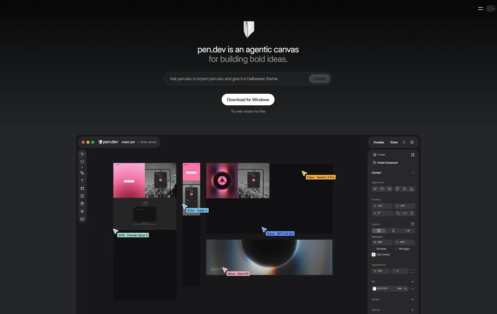

Pen.dev
- Сервисы и приложения
- ИИ-сервисы
- Утилитарный техно
- Минимализм
- Действующий сайт

Что это
Сайт настольного графического редактора, где дизайн собирают вместе с ИИ-агентами: задаёшь задачу словами, агенты раскладывают экраны на холсте, а готовое выгружается обратно в код. Для дизайнеров, разработчиков и продуктовых команд, которым нужен рабочий инструмент, а не генератор картинок. Впечатляющий, насыщенный деталями сайт агентного графического редактора.
Что смотреть в первую очередь
В первую очередь смотреть первый экран: он сам показывает продукт — холст с агентами и панель свойств. Дальше — демонстрации импорта и сетку карточек возможностей.
Интересные факты
- Редактор раньше назывался pencil.dev: в шапке главной висит полоса «pencil.dev is now pen.dev», которую можно закрыть.
- Первый экран — не картинка, а макет самого редактора: на тёмном холсте несколько экранов и цветные подписи агентов (Flare, Echo, Drift, Onyx, Nova), справа — панель со слоями, координатами и заливкой, как в настольной программе.
- Кнопка скачивания подстраивается под систему: у владельца на скриншоте она «Download for Windows», а в отданной мне разметке — просто «Download» со ссылкой на /downloads, рядом «Try web version for free» на app.pen.dev.
- Поле в центре — рабочий ввод задачи, а не украшение: в него пишут «Ask pen.dev to …», и подсказка меняется — на скриншоте про хеллоуинскую тему, в живой разметке про кофейню в Сан-Франциско.
- Внутри страницы спрятаны отдельные игрушки: кончик пера, который можно крутить (мини-программа в iframe с подписью «Spin the pen.dev nib»), и площадка Goodies, по которой таскают мышью или ходят стрелками с клавиатуры.
- Возможностей много и они разложены сеткой карточек: импорт Figma и HTML, шейдеры (маленькие программы, считающие цвет пикселей), переменные, встроенный браузер, расширение для Chrome, инструмент пера и удаление фона.
- Скриншот и живая шапка расходятся: на снимке справа только значок меню и переключатель темы, а в коде главной — ссылки Downloads, Pricing, Docs и иконки X и Discord.
Паспорт
- Домен
- pen.dev
- Тип сайта
- Многостраничный
- Категории
- Сервисы и приложения
- Подкатегории
- ИИ-сервисы
- Для кого
- Дизайнерам, Разработчикам, Продуктовым командам
- Стиль
- Утилитарный техно, Минимализм
- Язык
- Английский
- Страна
- не указано
- Автор
- High Agency Inc.
- Год
- не указано
- Добавлен в коллекцию
- 31.10.2026
Палитра
-
#191B1C— 92% кадра -
#3D3B41— 3% кадра -
#636569— 2% кадра -
#F58BB7— 1% кадра -
#88898B— 1% кадра
- Режим
- Тёмная
- Цвет фона
- Нейтральный
Технологии
- Next.js
- React (Server Components)
- Vercel
- next/font (Inter)
- next/image
- GoatCounter